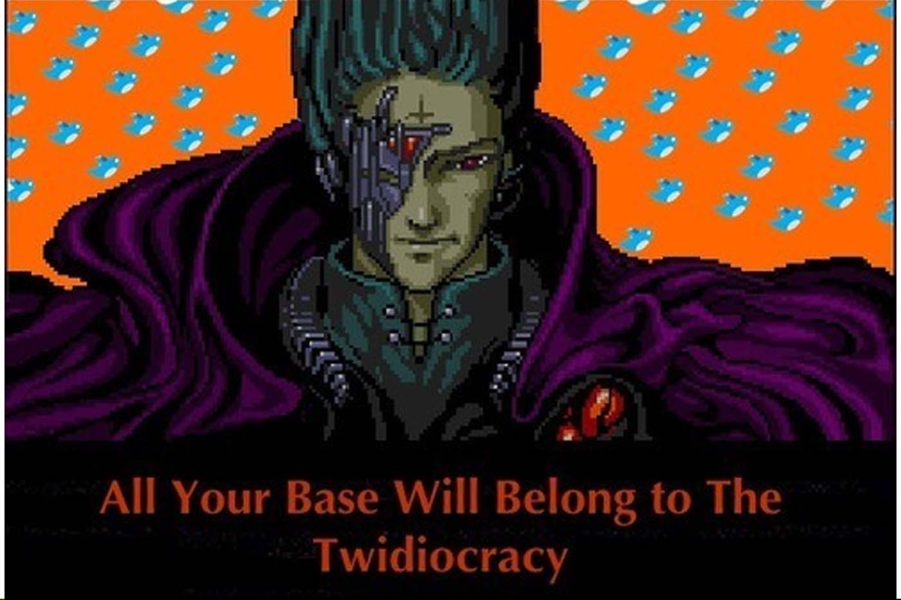

All your base belong to the Twidiocracy
Originally published at https://singularityhacker.com/all-your-base-belong-to-the-twidiocracyd

Matt Labash, the senior writer for The Weekly Standard just released a critical piece about Twitter and it’s ecosystem titled ’The Twidiocracy: The decline of Western civilization, 140 characters at a time.’ Feel free to read his article if you have a whole afternoon to waste (8k+ words).
Labash is your typical old-timey, ‘technology is ruining culture’, Luddite elitest types. He refers to Twitter users as attention-starved twidiots and cultists who “..have no business writing for public consumption..” and the Twitter experience like being in the “..worst years of one’s adolescence”. This, we are told, is why print is dying. Unsurprisingly, he focuses on celebrities, brands, and status junkies as representatives for what the ecosystem is all about.
Lets make a few things clear for the uninitiated. Firstly, Twitter is about hearing from and communicating with people in your own mind space. Actual users of the platform know that you need to follow people your actually interested in. Secondly, it’s to be expected that there will be a lot of crap on Twitter. What did Labash expect from the instantaneous unfiltered p2p global communication made possible by the web and by Twitter specifically? The exact same criticisms were made of radio, television, and blogging when they achieved mass penetration.
Labash shouldn’t be writing about technology or the web. He has no interest, sees no value, and is perfectly disengaged with the entire technology and startup scene. He mock complains that he cant follow anyone on Twitter because he doesn’t have a smart phone and that his phone is “..an old clamshell flip job that I’ve carried around since last decade.” so why is anyone interested in his analysis? We might as well be reading Martha Stewarts analysis of the BET music awards. It just wouldn’t make any sense because that’s not Martha Stewarts scene. I think its time to find your own scene Labash cause tech aint it.
Twitter is a public chat room for the world. “Twitter has become the real-time conversation of the world. Why chat with just one person when you can chat with EVERYONE?” - Wes Novack